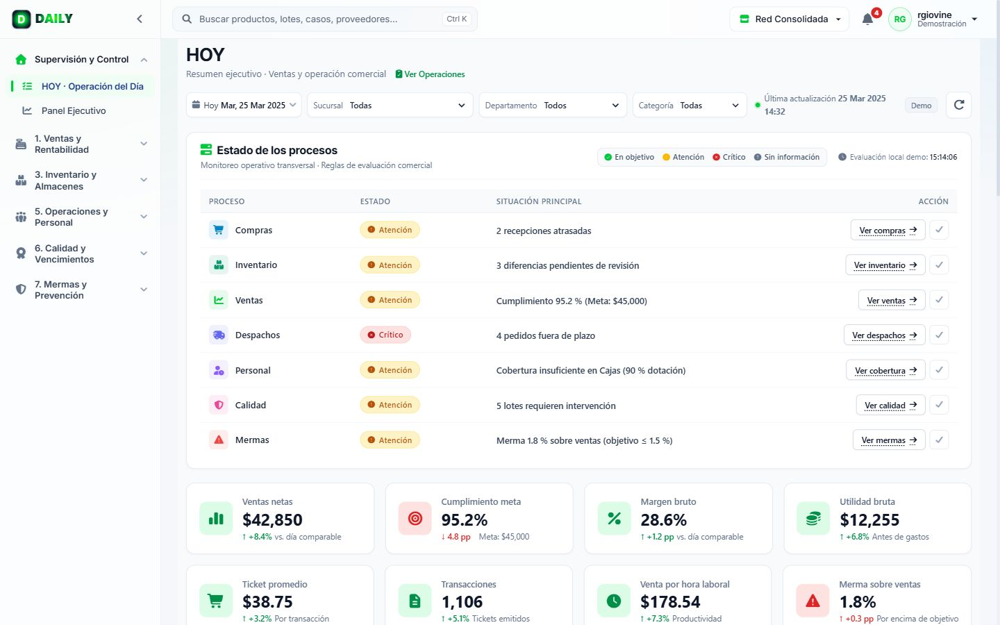
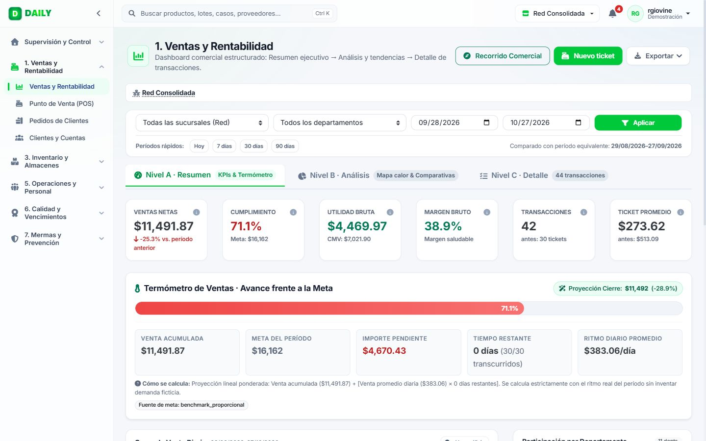
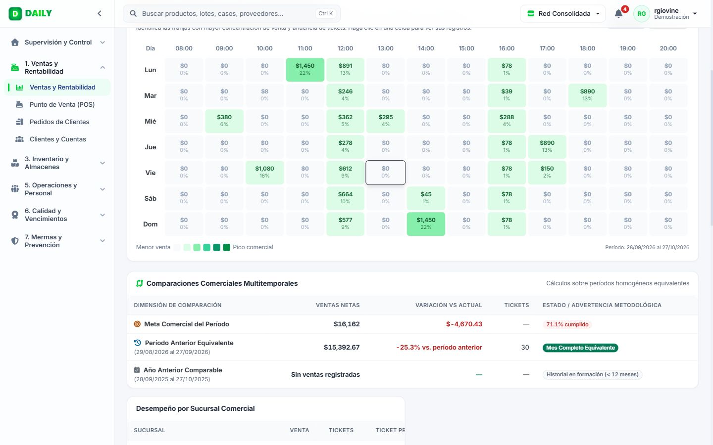
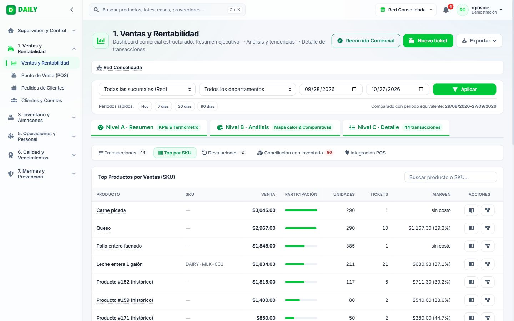
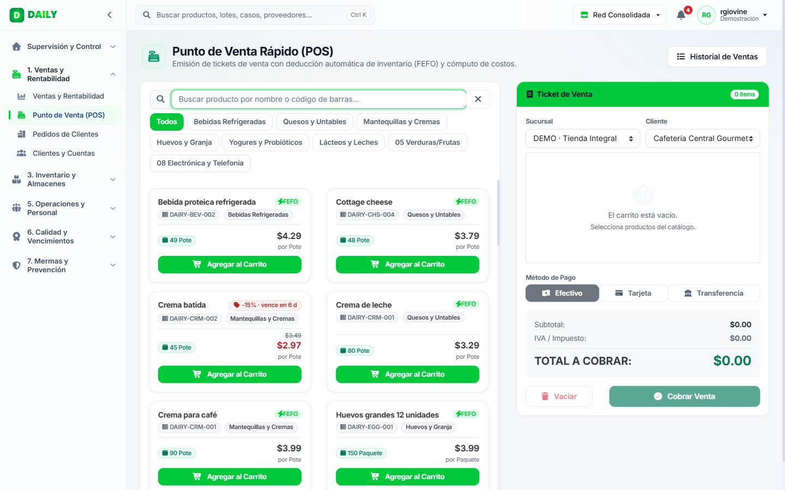
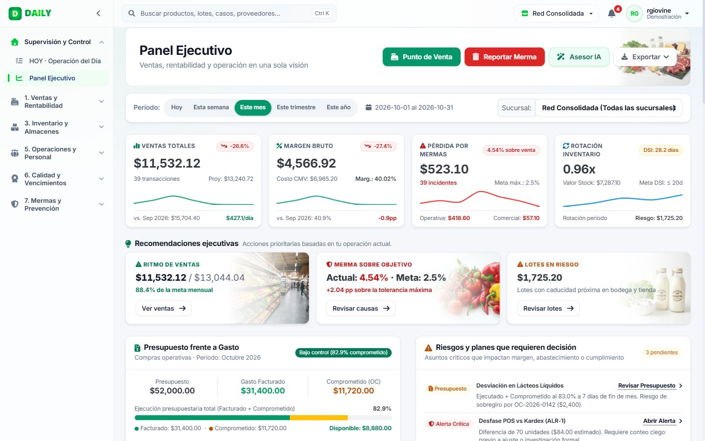
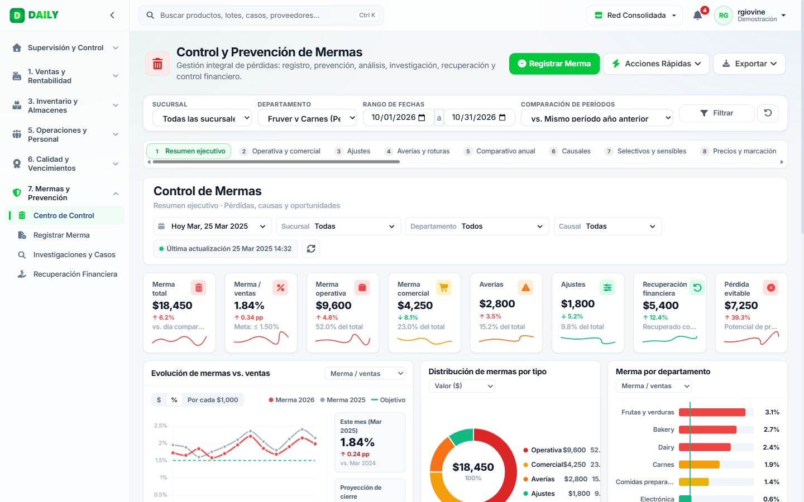

Ventas que se ven el mismo día: meta, margen y la operación que las sostiene, en un solo tablero.
Presentación comercial · Ventas y Rentabilidad · 2026
Se sabe si se cumplió la meta al cierre, no a mitad de mes, cuando aún hay tiempo de actuar.
Se mide cuánto se vendió, no cuánto quedó después del costo y la merma.
Los turnos no se arman con la afluencia real por día y hora.
Lo que se vende no descuenta el lote correcto; el vencido aparece después.
Los datos existen, pero repartidos entre caja, planillas y reportes de fin de mes.

Pantalla «Hoy» · operación del día
El recorrido viene integrado en la pantalla de Ventas (botón «Recorrido Comercial»).

Nivel A · Resumen y termómetro

Nivel B · Mapa de calor y comparativas

Nivel C · Detalle por producto

Punto de venta

Panel ejecutivo: venta, margen, merma y rotación

Mermas con causa, departamento y recuperación
Tomamos su venta, margen y merma actuales como línea base.
Una tienda con su catálogo y su caja; equipo capacitado.
Revisión semanal del tablero con el gerente de tienda.
Comparamos contra la línea base con el mismo método.
No prometemos una cifra antes de ver sus datos: la medimos juntos.
Demostración de 30 minutos con su gerente comercial u operativo y revisión de los datos disponibles para la línea base.